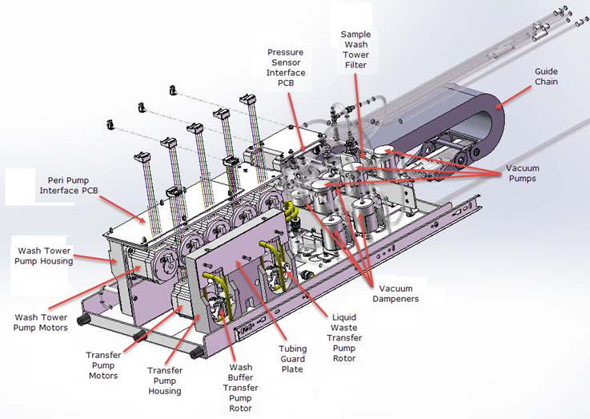
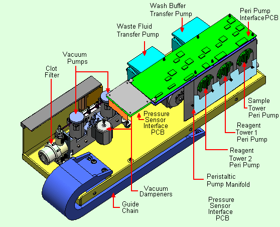
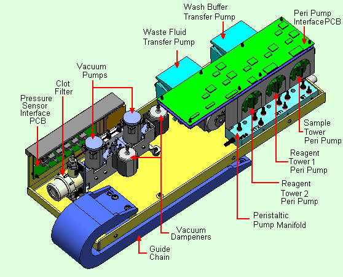
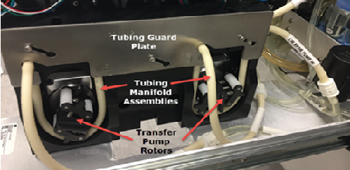
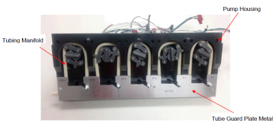

Fluidics Drawer Operating Principles
Purpose
This document details the operating principles for the fluidics drawer.
Module Function
- Transfers wash buffer from the bulk wash buffer container to:
- Wash towers for external probe wash.
- Internal wash buffer reservoir.
- Transfers waste fluid to the intermediate liquid waste container from:
- Wash towers during probe wash.
- Probe wash manifold during aspirate probe 1 wash.
- Transfers waste fluid from the intermediate liquid waste container to:
- Bulk waste fluid containers, or
- External waste drain.
Location
The fluidics drawer is located in the lower left front corner behind the access panel connected to the sample presentation unit.
Operational Overview
- Wash Buffer
A common bulk wash buffer supply line enters the fluidics drawer and branches through a Y-fitting into two lines:
- The wash buffer transfer peristaltic pump supplies wash buffer from the bulk supply drawer to the internal wash buffer reservoir. The reservoir has a float switch that signals the pump to power on when the fluid level is low.
- The external probe wash peristaltic pumps are mounted to a manifold in the front left corner of the drawer. These pumps are used to transfer wash buffer to the pipettor wash towers during pipettor probe clean routines.
- Waste Fluid
The waste fluid transfer peristaltic pump transfers waste fluid from an intermediate waste container to the user-accessible waste containers or through an external waste tube (if installed) to a nearby drain. The intermediate liquid waste container uses a float switch to signal the transfer pump to power on or off
- Vacuum
Vacuum pumps remove waste fluid from the sample and reagent pipettor wash towers and the aspirate probe wash manifold.
- Vacuum Dampeners
When the vacuum pumps are powered off, the vacuum dampeners prevent air from moving upward from the pumps back into the wash tower.
Component Locations





Component Functions
| Component | Description and Function |
|---|---|
| Chain, Guide | Flexible housing for tubing and cable connections. Chain provides controlled flexing and protection for contents. |
| Dampener, Vacuum | Minimizes amount of air from vacuum pumps moving upward into wash tower when vacuum pumps are not being used. |
| Housing, Molded, Transfer Pump |
New Transfer Pump Housing/Manifolds

|
| Manifold, Peristaltic Pump |
New Peri-pump Manifold
Important: The new design manifold no longer has the clear acrylic block.

Old Peri-pump Manifold
|
| Manifold, Vacuum | Group of fittings assembled under vacuum pumps to provide common output for vacuum pumps. Output line is routed from vacuum manifold to intermediate liquid waste container. |
| PCB, Interface, Peristaltic Pump | Provides electronic control for all pumps located in fluidics drawer. |
| PCB, Interface, Pressure Sensor | Provides:
|
| Pump, Reagent Wash Tower | Provides wash buffer to reagent probe wash tower for external wash of reagent pipettor probes. These pumps provide wash tower shower nozzles with buffer at a rate of no less than 112 mL/min. |
| Pump, Sample Wash Tower | Provides wash buffer to sample probe wash tower for external wash of sample pipettor probe. This pump provides the wash tower shower nozzle with buffer at a rate of no less than 112 mL/min. |
| Pump, Transfer, Wash Buffer | Transfers wash buffer from bulk wash buffer containers to:
|
| Pump, Transfer, Waste | Transfers waste fluid from intermediate liquid waste container to user-accessible bulk liquid waste containers or drain (drain kit required). |
| Pumps, Vacuum, Dual Head |
|
Interacting Devices
- Sample and reagent pipettor wash towers
- Aspirate probe wash collar
- Intermediate liquid waste container
- Bulk liquid waste containers
- Bulk wash buffer containers
- Internal buffer reservoir